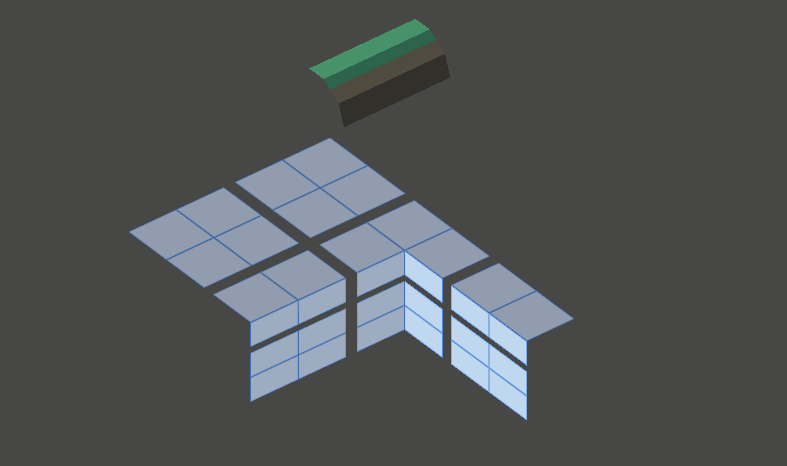

Vertex Contents
This mode shows how Wildtile has calculated where modules can be placed. The scene view includes an arrow pointing at one of the tile's corners. The arrow head's colour indicates whether Wildtile will import the tile with that corner inside or outside: A yellow head indicates the vertex is outside, and a dark blue head indicates it is inside.
Tip
The inside-outside colours can be remembered as yellow vertices are outside so they can see the sun; dark blue vertices are inside and are in shade.
Which Problems Are Identified?
If the GridPlacer places modules that do not conform to the map (e.g. with edges jutting out into space) then it is possible the modules have incorrect corner-insideness/vertex contents.

How To Use This Inspector To Solve The Problem?
Select the misbehaving module in the modules list and set the Inspection Mode to Vertex Contents.
Select different Vertices to see how Wildtile interprets the model for the different corners of the cube.
The inspector shows how Wildtile performs its insideness calculations. Wildtile picks an arbitrary triangle to start from, and shoots a ray from the middle of this triangle towards the corner. The ray starts inside or outside depending on the starting-triangle's direction - the ray will start as outside if the starting triangle faces the corner and inside if the triangle faces away from the corner.
Triangles indicate which faces the ray intersects with, and the circles show where on the surface the ray crosses. The colour of the triangle and circle show whether the ray is hitting the front or back of the face - blue indicates the ray is hitting the front face and going inside the mesh, and yellow indicates the ray is hitting the back face and emerging out of the mesh.
The ray shows a running total of the insideness. When the ray hits a face it will change its insideness. In well formed modules, the ray will show exactly one line and will always hit the opposite face to its current insideness (if it is inside (blue), the next closest face to the arrowhead will be a backface (yellow).

If the mesh is non-manifold, it is possible for the ray to become super-inside or super-outside. This will happen if it hits two front faces or two back faces in a row. If the mesh is non-manifold then Wildtile cannot reliably calculate the corner-insideness for it.
If the ray hits faces you do not want it to that have the same material, you can exclude the whole material using the Tileset Importer's Material Import Settings. In your Tileset Importer asset, find Importer Settings → Material Import Settings and find or add an item for that material. Then, ensure that Is Part of Manifold Mesh is unchecked.
Warning
The tileset importer needs at least one material marked as Is Part of Manifold Mesh. If there are no manifold mesh materials then all materials will default to being part of the manifold mesh, even if there are no Material Import Settings for them.
Conversely, if the ray does not hit faces that you want it to, you should find or add an item for those materials too. Then, ensure that Is Part of Manifold Mesh is checked.

If the error cannot be solved by changing how Wildtile interprets materials, you can edit the mesh in the same tool you used to author the mesh originally (normally an external modelling tool like Blender or 3DS Max). Then, reexport the model to Unity and refresh the inspector.
Explore the import settings for more information on how to use the Tileset Importer's Material Import Settings.